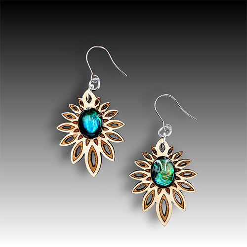
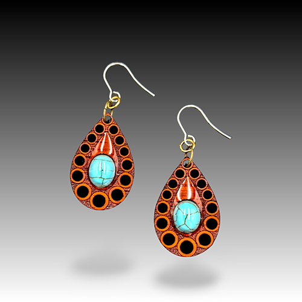
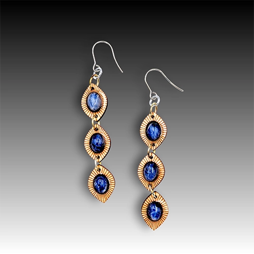
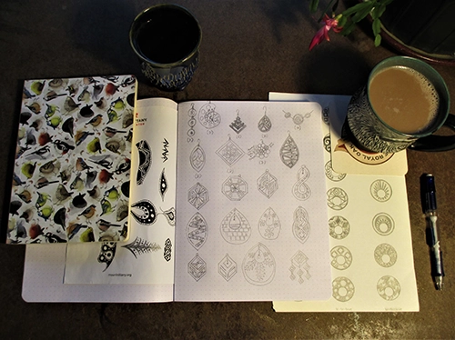
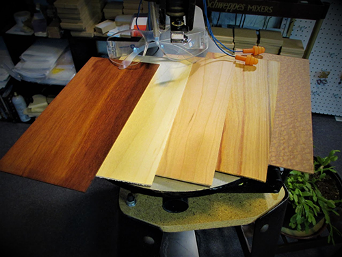
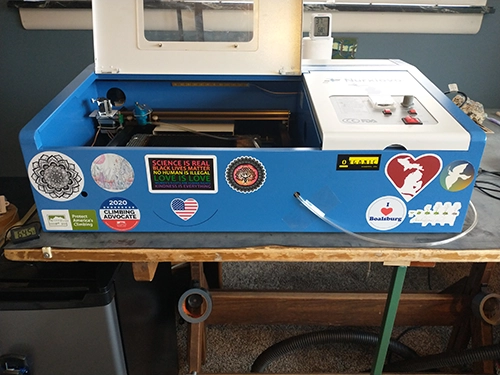
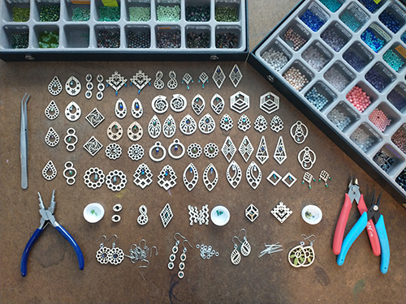

Wood is a fantastic medium for earrings and necklaces! Wooden jewelry is extremely lightweight, compliments all skin tones and hair colors, can be worn with a range of looks from chic and elegant to boho-casual.
All of my wooden jewelry designs, concepts, and processes are 100% original, and I aim to create a diverse range of styles and interests that lend to unique yet elegant individualism and self-expression. My design inspiration is rooted in exploring the emotional mechanics of human perception, understanding why specific sounds, movements, colors, and forms resonate with us and translating those insights into visual forms.
Cubic Zirconia Wooden Jewelry
I love the combination of sparkling cubic zirconia and light-weight wooden earrings and necklaces, so I developed a unique look and method to set cubic ziroconia stones into wood, similar to how stones are set into metal pieces of jewelry!
Free Stone Wooden Jewelry
Incorporating various stones and glass beads can enhance the organic hardwood tones and natural patterns within the grain. The contrast between smooth, polished elements and textured wood creates a harmonious interplay that adds depth, movement, and expressive character to each piece. I use high quality surgical steel hooks for dangle earrings, however I am more than happy to switch them out for sterling silver or titanium hooks for specific needs!
Wooden Stud Earrings
These unique stud earrings are my own creation in both visual design and how they are made and constructed, combining original wooden setting designs with natural stones, shells, and glass centers. Stud earrings sizes range from very small to large. All stud earrings are hypoalergenic using high quality titanium posts (Grade 1, ASTM F67) with a silicone backing.
Wooden Jewelry with Embedded Stones
Including natural stone, shell, and glass cabochons set directly into the wood creates a design that highlights the vibrant color of each cabochon while the wood visual balance through design, color and texture, and comfortable lightness for all-day wear. I use high quality surgical steel hooks for dangle earrings, however I am more than happy to switch them out for sterling silver or titanium hooks for specific needs!





Using pencil and paper is my favorite way to design jewelry. Although I appreciate the power of technology and require it for my work, my personal feeling is that designing using pencil and paper provides a more natural and free perspective. When designing jewelry I aim to incorporate a diverse range of styles and interests that lend to unique yet elegant individualism and self-expression. I especially love combining opposites such as sharp confident edges with soft curves into a single design. I find inspiration from many things, but mostly find design inspiration through conceptual patterns with movement and meaning often found in nature and abstract art.

After designing, it's time to prep the wood and cut! Cherry, Maple, and Padauk are the primary species I use for jewelry, but I've experimented with at least eighteen additional tree species including Bloodwood which was a particular favorite since it smells like roasted coconut when burned! The wood species I use must have the perfect combination of uniform strength, density, hardness, "cuttability", and natural beauty. All of my jewelry designs are put through a series of tests to ensure strength and integrity for daily wear.

I love my K40 laser cutter! This particular machine was not an "open it up and turn it on" machine and I only recommend it to those who are interested in learning about laser cutters and are up to the task of fixing several problems since these cutters usually never arrive in working condition. It took a few months of research, fixes, modifications, upgrades, rewiring, cooling system development, and help from online groups and local experts to start making jewelry! Thank you to Matt at The Make Space in State College for all of your knowledge and advice, and Paul for your help in diagnosing my x-axis issue! I continue to explore upgrades and modifications to optimize the cutter for making jewelry. When all is ready to go I use two different software programs to translate my designs into a language that the laser cutter understands, throw on protective eyewear, and the cutter does the rest!

Constructing jewelry and selecting the perfect stone for the specific design and wood species combined is one of my favorite parts of the jewelry making process! Whether it's setting cubic zirconia into its wooden design, selecting stones and constructing stud earrings, or matching the perfect stone bead to a dangle earring design, each step and piece of jewelry is created with love and care!